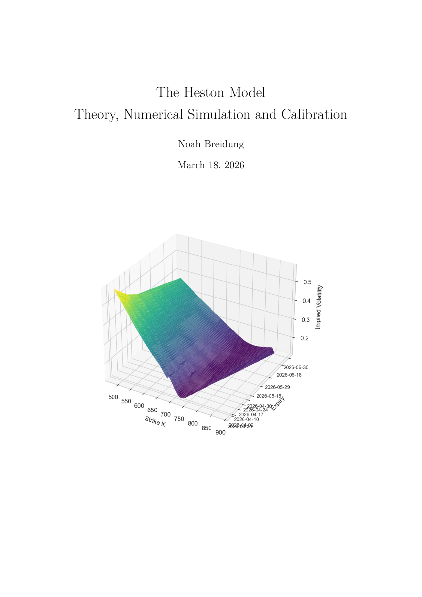
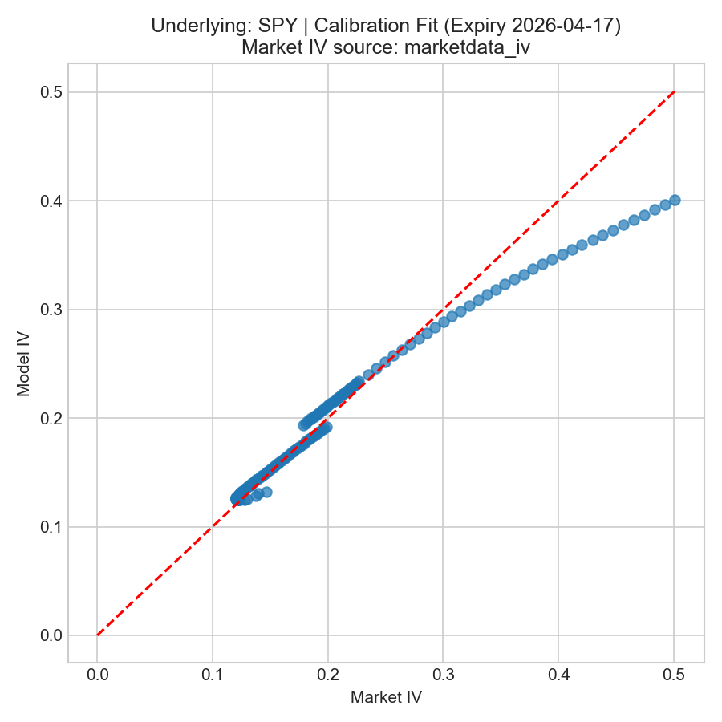
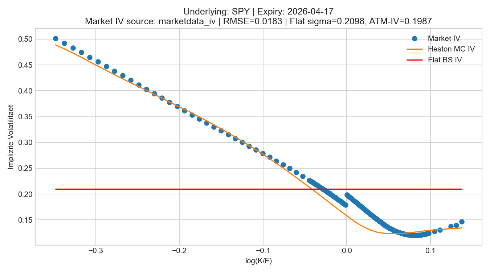

Seminar paper · March 18, 2026
The Heston Model
Theory, Numerical Simulation and Calibration

Abstract
This paper studies the Heston model as a risk-neutral stochastic volatility model with particular emphasis on the Cox-Ingersoll-Ross-type variance process. It specifies the model framework, the log-price representation and the role of the Feller condition before turning to existence, uniqueness, non-negativity and boundary behavior of the variance process.
Building on this structure, the paper organizes time discretization, Monte Carlo pricing and calibration in the space of implied volatilities. The empirical study uses cleaned SPY option data and discusses the limits of the Heston model as motivation for rough-volatility approaches.
Main Topics
- Risk-neutral Heston dynamics and log-price representation
- CIR variance process, Feller condition and boundary behavior
- Full-Truncation Euler, Log-Euler and Monte Carlo pricing
- Calibration to SPY implied volatility smiles
Selected Figures

